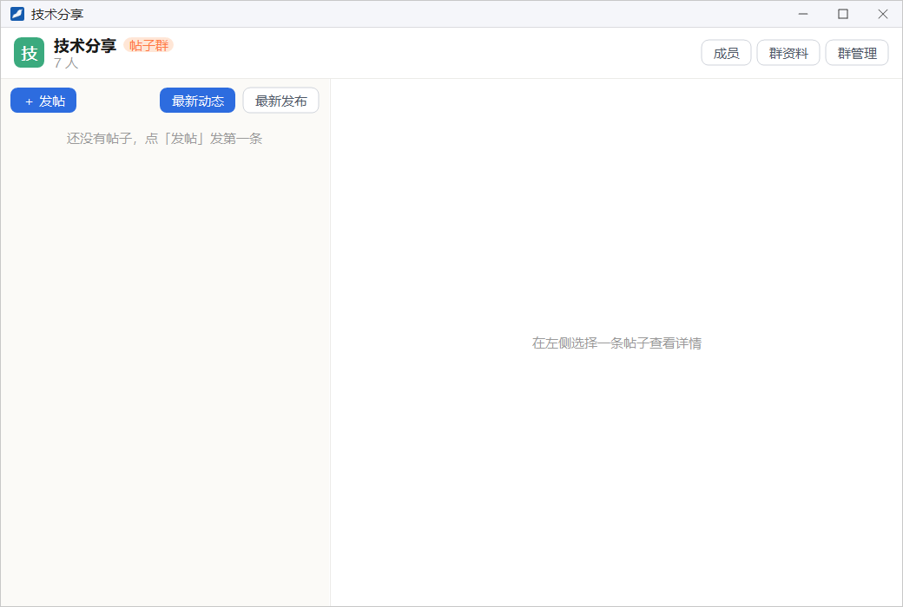
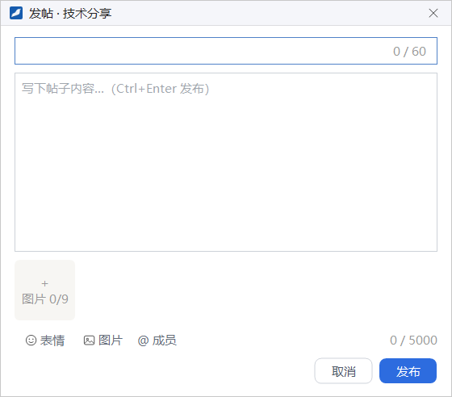
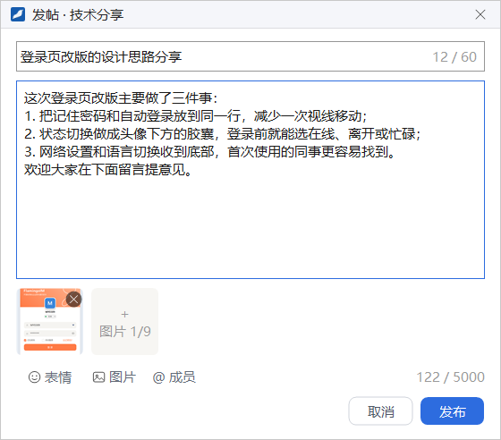
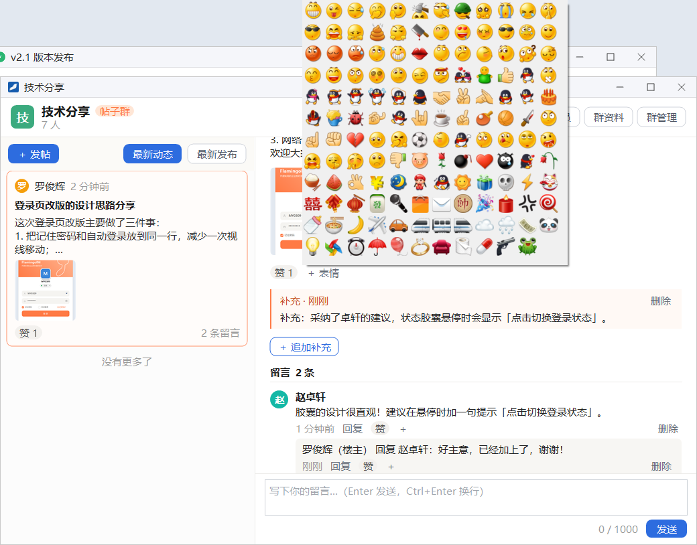
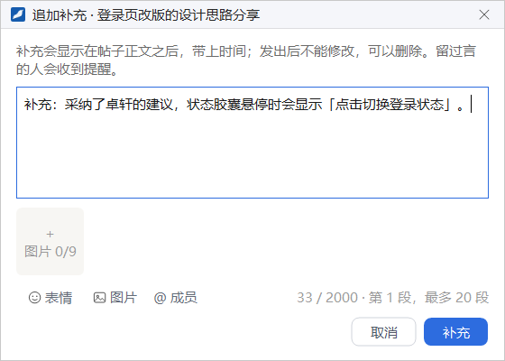

帖子群
帖子群是一种没有聊天消息流的群：成员发帖，其他人在帖子下点赞、回应和留言讨论。它适合技术分享、方案讨论这类需要围绕一个话题集中讨论、并长期留存的内容。
- 适用：全体员工
- 需要：企业开启「帖子群」开关
- 置顶帖子：仅群主和管理员
创建帖子群
帖子群的创建方法与普通群相同：在「新建群聊」窗口里把 群类型 选为 帖子群，详见「群聊 → 新建群聊」。帖子群建好后不能改成普通群。
- 群列表里的帖子群在群号前写着 帖子群，双击打开帖子群窗口。
- 在帖子群上点右键，第一项是 打开帖子群；帖子群没有聊天消息，所以菜单里没有「开启字幕模式」。
- 帖子群不能作为转发消息的目标。
帖子群不见了？企业关闭「帖子群」开关后，帖子群会从群列表和会话列表中隐藏，重新开启后恢复显示。开关的位置见「功能开关」。
认识帖子群窗口

帖子群窗口左侧是帖子列表，右侧是选中帖子的详情。下面是有了一条帖子之后的样子：
1
2
3
4
5
6
7
8
9
10
- ＋ 发帖：发一条新帖子
- 最新动态 / 最新发布：帖子列表的排序方式
- 帖子卡片：作者、时间、标题、摘要、图片，以及赞数和留言数
- 成员 / 群资料 / 群管理：头部右侧的三个按钮
- 楼主：标出发帖人
- 编辑 / 置顶 / 删除：按你的身份显示
- 赞 / ＋ 表情：给帖子点赞或加表情回应
- ＋ 追加补充：楼主在正文之后补充内容
- 留言区：显示留言条数和全部留言
- 留言框：写留言，按 Enter 或点「发送」发出
头部按钮
- 成员：在窗口右侧滑出群成员面板，成员的右键菜单与群聊窗口的成员列表相同。
- 群资料：打开群资料窗口，见「群聊 → 群资料」。
- 群管理：仅群主和管理员可见，打开群管理窗口。帖子群的群管理没有「群公告」页，其余用法见「群管理」。
帖子列表
- 最新动态（默认）：按最近一次发帖、留言、回复或补充的时间排序，有新讨论的帖子排在前面。
- 最新发布：按发帖时间排序。
- 被置顶的帖子总是排在最前面，卡片上标有 置顶。
- 滚动到列表底部会继续加载更早的帖子，全部加载完后显示「没有更多了」。
发帖

- 点左上角的 ＋ 发帖。
- 在第一行填写标题。标题可以不填，最多 60 个字，右侧显示已输入的字数。
- 在大框里写正文，最多 5000 个字。
- 按需添加图片：点 图片 按钮或上方的「＋ 图片 0/9」方框选图，最多 9 张；点缩略图右上角的 × 可以删除。
- 需要时用 表情 插入表情，用 @ 成员 提醒群成员。
- 点 发布，或按 Ctrl+Enter。

发帖的几条限制正文和图片至少要有一样；图片还在上传时不能发布，要等上传完成；一次最多 @ 50 个人，「所有人」只有能 @ 全体成员的人才看得到（规则与群聊相同，由群权限里的「谁能 @ 全体成员」决定）。内容还没发出就点 取消 时，会先询问是否确定关闭。
查看帖子与互动
在左侧点一张帖子卡片，右侧显示帖子详情：作者与发帖时间、标题、正文、图片，下面是互动区、补充和留言。发帖人的名字旁边标着 楼主。
编辑、置顶与删除
详情右上角的按钮按你的身份显示：
| 按钮 | 谁能用 | 说明 |
|---|---|---|
| 编辑 | 仅作者 | 打开「编辑帖子」窗口修改标题、正文和图片，修改过的帖子会标出「已编辑」 |
| 置顶 / 取消置顶 | 群主、管理员 | 把帖子固定在列表最前面，每个帖子群最多置顶 3 条 |
| 删除 | 作者、群主、管理员 | 删除帖子时，帖子下的补充、留言与回复会一起删除 |
点赞与表情回应
点 赞 给帖子点赞，再点一次取消。点 ＋ 表情 会弹出表情面板，选一个表情即可作为回应。回应会以「表情 + 人数」的形式显示在「赞」旁边，帖子卡片上也会同步显示；鼠标停在某个回应上，会提示有哪些人这样回应过。

追加补充
帖子发出后，楼主可以在正文之后追加补充内容，例如说明采纳了哪些建议。只有楼主能看到 ＋ 追加补充 按钮。

- 在帖子详情里点 ＋ 追加补充。
- 写下补充内容，最多 2000 个字，也可以添加最多 9 张图片、插入表情或 @ 成员。窗口右下角显示这是第几段补充。
- 点 补充，或按 Ctrl+Enter。
- 补充显示在帖子正文之后，并带上时间。
- 补充发出后不能修改，但可以删除。
- 在这个帖子下留过言的人会收到提醒。
- 每个帖子最多追加 20 段补充。
留言与回复
帖子详情底部是留言框，提示文字为「写下你的留言…（Enter 发送，Ctrl+Enter 换行）」。写好后按 Enter 或点 发送，每条留言最多 1000 个字。
每条留言下方显示时间，以及几个操作：
- 回复：留言框上方出现「回复 某某：」提示，写好后发出；点提示行右侧的 ✕ 取消 可以改回普通留言。回复显示在被回复的留言下面，以「某某 回复 某某：」开头，楼主的名字后面会加上「（楼主）」。
- 赞 和 ＋：给这条留言点赞或加表情回应。
- 删除：留言的作者、群主和管理员可以删除。
一条留言下的回复较多时，点 查看更多回复（N 条） 展开；留言较多时，点 加载更多留言 继续加载。
提示「本群目前只有群主和管理员可以发帖和留言」说明你在本群暂时不能发言，例如被禁言，或者群开启了「仅通知模式」。这时你不能发帖、留言和补充，但仍然可以浏览帖子。仅通知模式的设置见「群管理 → 禁言管理」。